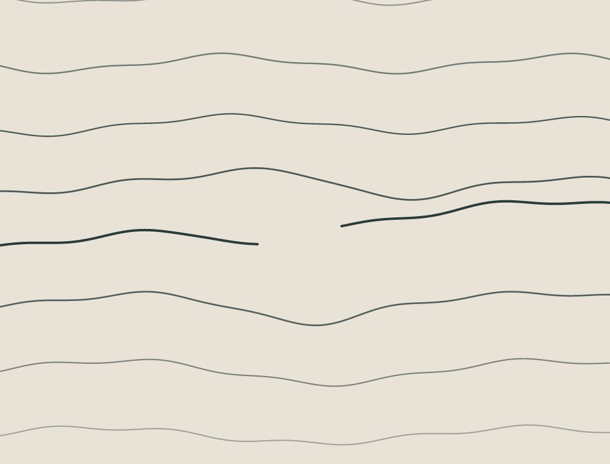

Vyt Aitken · Digital drawing · 17 October 2026
The Unmarked Space

One contour stops and begins again on another level. The surrounding lines turn in their own ways; the gap remains open.
Code-drawn SVG. The lines are invented and do not represent a map, textile, or print.
Back to the studio